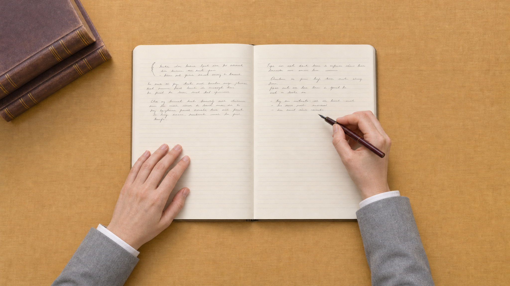
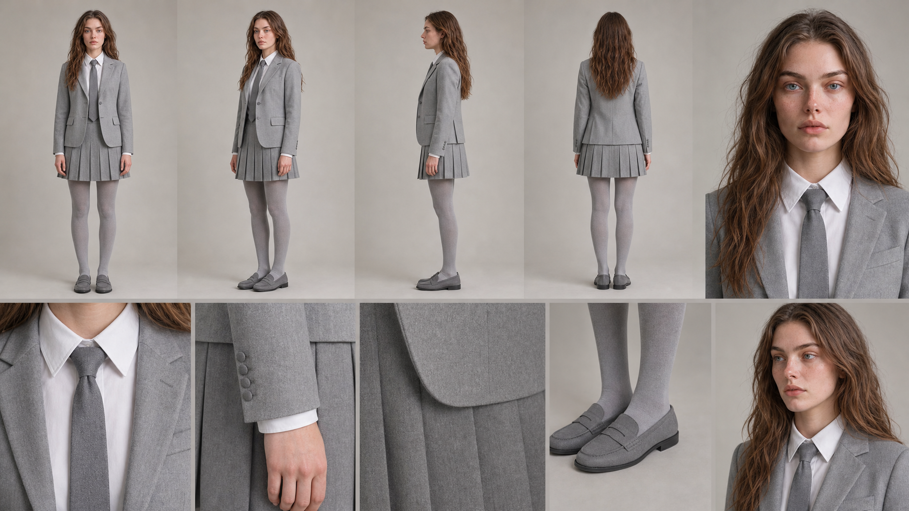

11A · Her page stops
Back to storyboardAll stills · 01 · 02 · 03 · 04 · 05 · 07 · 08 · 09 · 10 · 11 · 11A · 11B · 12

Inputs


Full still prompt · gpt-image-2.6
Create a single new photographic 16:9 still: an INSERT shot, camera straight down (overhead) on a honey-yellow classroom desk. Image 1 is the authority for camera angle, framing, desk surface, light and Linney's plain light-grey blazer sleeves and hands. Change ONLY the object: replace the notebook and fountain pen with the same old book Linney reads in Image 3: an open hardback book with cream pages of printed text, worn plum-brown cover. Her two hands rest on the open book; her right thumb is pressing the corner of the right-hand page flat, as if about to turn it. No pen, no notebook. A second closed plum-brown book with gold spine bands lies at the edge of the desk. Image 2 controls her hands and sleeves (light-grey blazer, white shirt cuffs). Soft even window daylight. Smooth clean photographic finish, no grain, no text you can read, no watermark. Hands natural, five fingers each.
Video: MAGI-2 select S11A.mp4.